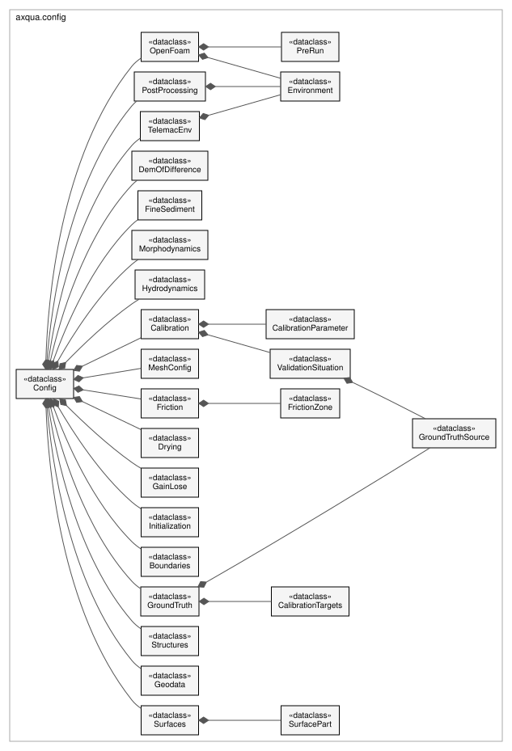
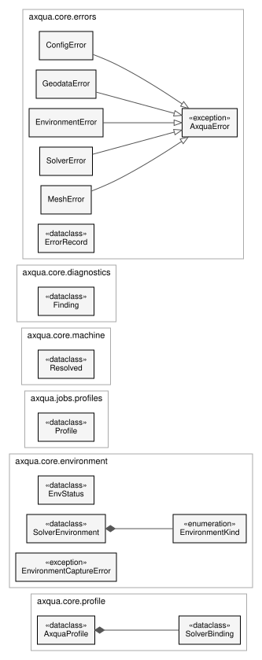

Configuration
The case description and everything that locates the simulation software on a computer. axqua.config holds one data class per block of the case file. axqua.core.schema states which settings describe the free-surface water body, which belong to one simulation code, and which describe the computer. The settings of the computer are stored in the profile (axqua.core.profile).


Classes of the case description (axqua.config). The class Config contains one class per block of a case file, and some blocks contain further classes, for example one class per calibration parameter.
Case description
User configuration framework for the TELEMAC setup pipeline.
A single YAML file (see cases/example-Inn/case-config.yml) describes the whole case: where the
TELEMAC environment lives, the coordinate system, the input geodata/hydraulics,
the meshing and friction strategy, and the calibration parameters handed to
HydroBayesCal. This module loads that YAML into validated dataclasses.
Design goals: * one source of truth for paths so every stage agrees on file locations; * sane defaults so a minimal YAML works, but every knob is overridable; * fail loudly and early (missing inputs, inconsistent CRS) before TELEMAC runs.
- axqua.config.LEGACY_SIM_DIR = 'hydromate-case'
What the artifact folder was called before the project was renamed to aXqua.
- class axqua.config.Environment(kind=None, setup_script=None, shell=None, distro=None, mpi_launcher=None, overrides=<factory>)[source]
Bases:
objectHow to enter a solver’s installation on this machine.
Optional everywhere: a config that only carries
telemac.pysource(every case written before this existed) resolves to a POSIX environment against that script, so nothing has to be migrated. Seeaxqua.core.environment.kindis what makes Windows work. TELEMAC has native Windows builds configured through a.bat(windows); the Foundation OpenFOAM axqua targets has no native Windows build, so on Windows it is reached throughwsl.- Parameters:
- class axqua.config.TelemacEnv(pysource, environment=<factory>, solver='telemac2d', n_processors=1, version='v8p4', solver_python=None)[source]
Bases:
objectHow to reach and run the TELEMAC solver.
pysourceis the shell script that, when sourced, exports HOMETEL and the TELEMAC PYTHONPATH (e.g.configs/pysource.mint22.sh). The pipeline does not import TELEMAC’s Python directly; it sources this script in a subshell for any solver call (seeaxqua.env).- Parameters:
- environment: Environment
- axqua.config.PROFILE_RULES = ('single', 'all', 'drop-lowest', 'depth-average')
Valid
GroundTruthSource.profilerules. Must stay in step withaxqua.ground_truth.PROFILE_RULES(fenced by a test).
- class axqua.config.GroundTruthSource(category, kind='flowtracker', values=None, positions=None, join_key='ID', sheet=None, profile='single', group_key=None)[source]
Bases:
objectOne raw ground-truth source to compile into the tidy measurements table.
Measured values and their positions usually live in separate files: the values export (e.g. a SonTek FlowTracker
.ft.sumworkbook) and a positions point layer (shp/gpkg) joined onjoin_key.categoryis the tab the source contributes to the tidy table (hydraulics,sediment, …);kindselects the adapter (flowtrackerorpoints).- Parameters:
- sheet: str | int | None = None
Worksheet to read the values from.
Nonekeeps the historic behavior (the first sheet, one row per vertical). Name a per-reading profile sheet to use anyprofilerule other thansingle.
- profile: str = 'single'
Which reading of a multi-depth vertical becomes a target - see
axqua.ground_truth.select_profile_rows().singleis the default and reproduces the previous behavior exactly.
- class axqua.config.CalibrationTargets(file=None, hydraulics_positions=None, sediment_positions=None, join_key='ID')[source]
Bases:
objectThe user-filled
calibration-target-data.xlsxtemplate and its links.fileis the filled template (generated byaxqua targets; tabshydraulics/morphodynamics/parameters). Measurement rows are joined by their uniquejoin_key(defaultID) to the per-category point layers inuser-sources/geodata/-hydraulics_positionsandsediment_positions(reprojected to the project CRS on ingest); rows may instead carry explicit x/y, which win over the layer.- Parameters:
- class axqua.config.Geodata(dem_initial, boundary, dem_target=None, breaklines=None, mesh_zones=None, channel_centerline=None, roughness_zones=None, structures=None, roughness_table=None, region_points=None, region_table=None, dem_of_difference=None, control_sections=None, control_section_name_field=None)[source]
Bases:
objectUser-provided geodata files (paths resolved against the config dir).
Pure geodata only - the boundary conditions (liquid boundary lines, inflow, rating curve, prescribed values) live in
Boundaries, and the calibration ground truth inGroundTruth.- Parameters:
dem_initial (Path)
boundary (Path)
dem_target (Path | None)
breaklines (Path | None)
mesh_zones (Path | None)
channel_centerline (Path | None)
roughness_zones (Path | None)
structures (Path | None)
roughness_table (Path | None)
region_points (Path | None)
region_table (Path | None)
dem_of_difference (Path | None)
control_sections (Path | None)
control_section_name_field (str | None)
- validate(*, produced=frozenset({}))[source]
Check the inputs exist.
produced names the entries an earlier stage writes rather than the user supplying - the CAD surface stage, in practice. Those are allowed to be missing here, because validating a case before its first build is exactly when they do not exist yet, and refusing to validate would make
--checkuseless for the one kind of case that most needs checking first. What produces them validates its own inputs instead (Surfaces.validate()).
- class axqua.config.Structures(enabled=True, type_field='Type', mode_field='Mode', crest_field='Crest (m)', height_field='Height (m)', width_field='Width (m)', name_field='Name', default_width=1.0, solid_freeboard_2d=2.0, blanking_rule='touch', blanking_area=0.5, solid_mode='raise', cut_simplify=0.005)[source]
Bases:
objectDams, weirs, walls and buildings (optional; off unless a layer is given).
Deliberately expressed as an ordinary vector layer with attributes rather than a triangulated surface: axqua writes the mesh itself, so a structure only has to say where its footprint is and how high it stands. No STL, no CAD step, and nothing QGIS cannot author or round-trip. See
axqua.core.structures.- Parameters:
- axqua.config.SURFACE_ROLES = ('bed', 'wall', 'inflow', 'outflow', 'roi', 'ignore')
what a CAD part is, and therefore what it becomes downstream
- class axqua.config.SurfacePart(file, role='bed', zone_id=None, ks=None, name=None)[source]
Bases:
objectOne STL part of a CAD assembly, and the role it plays in the model.
bedparts are rasterised into the DEM;wallparts becomeStructuresfootprints with a crest;inflow/outflowparts become the lines of the liquid-boundary layer;roioverrides the domain outline that is otherwise the bed’s own coverage;ignoreis for the parts a CFD export carries that are not geometry at all - the air-phase bounding patches of a VOF case being the usual ones.
- class axqua.config.Surfaces(parts=<factory>, resolution=0.05, scale=1.0, rotation_deg=0.0, dx=0.0, dy=0.0, dz=0.0, bed_max_slope_deg=45.0, wall_min_slope_deg=70.0, simplify=None, min_wall_area=0.0, max_triangles=None, dem_name='dem-from-surfaces.tif', roi_name='roi-from-surfaces.gpkg', boundaries_name='liquid-boundaries-from-surfaces.gpkg', structures_name='structures-from-surfaces.gpkg', roughness_zones_name='roughness-zones-from-surfaces.gpkg', roughness_table_name='roughness-table-from-surfaces.csv')[source]
Bases:
objectCAD geometry as the terrain and domain of a case (optional; off by default).
For a structure that was designed rather than surveyed - a fish pass, a culvert, a flume - there is no DEM and there never will be. This block names the STL parts of the CAD assembly and what each one is, and the surface stage turns them into the ordinary artifacts the rest of axqua consumes: a DEM, an ROI polygon, liquid-boundary lines, structure footprints and roughness zones. Nothing downstream knows that a CAD file was involved. See
axqua.core.surfaces.The transform places CAD-local coordinates on the map. Leave it at the identity to work in local coordinates: the model is physically the same either way, and only its position on a map is arbitrary.
axqua georefderives one from a DXF.- Parameters:
parts (list[SurfacePart])
resolution (float)
scale (float)
rotation_deg (float)
dx (float)
dy (float)
dz (float)
bed_max_slope_deg (float)
wall_min_slope_deg (float)
simplify (float | None)
min_wall_area (float)
max_triangles (int | None)
dem_name (str)
roi_name (str)
boundaries_name (str)
structures_name (str)
roughness_zones_name (str)
roughness_table_name (str)
- parts: list[SurfacePart]
- transform()[source]
The
axqua.core.surfaces.Transformthis block describes.
- class axqua.config.Boundaries(liquid_boundaries=None, inflow=None, stage_discharge=None, outflow_condition='elevation', rating_method='trapezoid', prescribed_flowrate=None, prescribed_elevation=None, internal_source_region_width=3.0, internal_sources=False)[source]
Bases:
objectBoundary conditions: the liquid-boundary lines plus the prescribed values.
liquid_boundariesis the LINE layer whose ‘Type (inflow/outflow)’ field tags each line; it is required for a build.inflow(a discharge time series CSV) is OPTIONAL - it drives a later unsteady case; the steady initial run is driven by the scalarprescribed_flowrate(andprescribed_elevation/stage_dischargefor the outflow).- Parameters:
- class axqua.config.Initialization(initial_conditions='ZERO DEPTH', dry_start_depth=0.5, dry_start_extent=None, prewet_depth=None, prewet_mode='normal-depth', prewet_fill=0.7, prewet_min_depth=0.05, prewet_bin_spacing=20.0, prewet_transect_half_width=60.0, drainable_prewet=True, drainable_tolerance=0.02)[source]
Bases:
objectInitial-condition controls for the run (dry start vs pre-wetting).
- Parameters:
- class axqua.config.GainLose(enabled=False, zone=None, faces='water-table', discharge=None, zone_buffer=None, mode='off', losing_region='line', depth_field='porous depth (m)', name_field='Patch name', min_depth=0.05, taper_depth=0.05, conductivity=None, suction=0.2, porous_depth=0.5, max_rate=0.001, patch_drain=False, water_table='off', water_table_levels=None, patch_drain_max_rate=None)[source]
Bases:
objectA gain-lose reach: flow that leaves the surface through a porous body and returns to it downstream.
A 2D depth-averaged model has no subsurface, so the underflow is represented as an internal withdrawal where water infiltrates plus an injection where it resurfaces. Set
enabled: trueand pointzoneat the porous body (a gravel bar, an alluvial patch); everything else has a working default.Where the exchange happens is
faces:water-table(default): the faces follow the physics. The bar’s saturated zone is bounded by the two channel levels it exchanges with, so the water table (axqua.watertable) is known, and then a node loses where it is wet and its free surface stands above the table, and gains where the table stands above the bed. Nothing has to be drawn, and the faces move with the stage instead of being frozen at build time - which matters, because it is genuinely fuzzy where percolation begins and ends.lines: the exchange is pinned to theint-*lines ofboundaries.liquid_boundaries, each buffered to a strip (boundaries.internal_source_region_width). Pick this when the exchange location is actually known - a spring line, a measured seepage face.
How big it is is
conductivityordischarge:conductivity(kf) drives it by default: the exchange follows Green-Ampt’s saturated limit at the local head, so it responds to water level and kf is a physically meaningful calibration parameter (HydroBayesCal knows it asgainlose_kf).dischargeoverrides that with a measured total [m3/s], normalized over the losing face - available with eitherfacessetting.
modeselects the implementation and defaults tofortranwhen enabled: a generatedUSER_RAINroutine that withdraws depth-limited (tapering to zero as a cell approachesmin_depth, so a sink can never dry a cell) and reinjects exactly what it took.regionuses TELEMAC SOURCE REGIONS instead - simpler, no compiler needed, but a fixed-rate sink diverges as the local depth approaches zero (see cases/isar-2025/test-approaches.md, rungs T2/T3).The zone layer may carry a porous-depth attribute (
depth_field) and a name (name_field).- Parameters:
enabled (bool)
zone (Path | None)
faces (str)
discharge (float | None)
zone_buffer (float | None)
mode (str)
losing_region (str)
depth_field (str)
name_field (str)
min_depth (float)
taper_depth (float)
conductivity (float | None)
suction (float)
porous_depth (float)
max_rate (float)
patch_drain (bool)
water_table (str)
water_table_levels (dict | None)
patch_drain_max_rate (float | None)
- property active: bool
True when a gain-lose exchange is to be built.
enabledis the new switch; the deprecatedpercolation:block said the same thing withmodeother thanoff, so both are honored.
- axqua.config.Percolation
Deprecated alias - the block was called
Percolationwhile the feature lived in the isar-2025 case. Kept so existing imports and case scripts keep working.
- class axqua.config.Drying(film_infiltration=False, film_depth=0.01, film_velocity=0.005, film_rate=1e-05)[source]
Bases:
objectRemoval of water too thin to be surface flow (a generated USER_RAIN term).
On a coarse bed, water thinner than the grain roughness is not flowing over the bed - it is standing within it, and physically it drains into the substrate. A 2D model has no substrate, so that water stays put and paints a wetted area far larger than the reach actually has: on isar-2025 the sub-centimetre band covered 1503 m2 (13 % of the wetted area) while holding 4.4 m3 (0.16 % of the volume), at a mean speed of 0.000 m/s.
TELEMAC offers no keyword for this.
H CLIPPING+MINIMUM VALUE OF DEPTHdo the opposite - the dico states the truncation “is equivalent to adding mass” - and are marked “not fully implemented”. So the withdrawal is generated into the sameUSER_RAINroutine the percolation exchange uses.The extracted water is reinjected at the gaining line together with the percolation water, which keeps the domain mass-exact. That matters for more than tidiness: a net domain sink S makes the steady-state boundary budget read
|Q_in| - |Q_out| = S, so a permanent sink would put a floor under the relative flux imbalance (0.0044 m3/s against 2.4 m3/s is 1.8e-3, above the 1e-3 hydraulic tolerance) and no hotstart case would ever be written.
- class axqua.config.GroundTruth(measurements=None, sources=<factory>, targets=None, position_quality=None, position_sigma=None)[source]
Bases:
objectCalibration ground truth: a tidy measurements table or raw sources to compile.
Provide either
measurements(a user-authored tidy multi-tab table) orsources(raw sources axqua compiles into that table). Whensourcesare given,measurements(if set) is the compiled artifact’s output path.- Parameters:
measurements (Path | None)
sources (list[GroundTruthSource])
targets (CalibrationTargets | None)
position_quality (str | None)
position_sigma (float | None)
- sources: list[GroundTruthSource]
- targets: CalibrationTargets | None = None
- position_quality: str | None = None
How well the survey’s HORIZONTAL coordinates are known. A calibration reads the model at the measurement’s coordinates, so a position error is charged to the model - or to whichever parameter happens to absorb it. Naming the survey’s GNSS solution quality (
rtk-fixed/rtk-float/dgps/standalone) turns that into an error bar instead. Leave unset and nothing changes; the default is no positional uncertainty at all.
- position_sigma: float | None = None
Explicit horizontal sigma [m], winning over
position_quality- for a survey whose real accuracy is known rather than assumed.
- problems()[source]
Return ground-truth input problems as messages (empty when all OK).
Ground truth feeds only the calibration / HydroBayesCal setup (pipeline stage 5), never the TELEMAC model build itself, so a missing or mismatched source must NOT abort the build. Callers treat these as warnings: the model setup still completes and only the HydroBayesCal setup is skipped.
- class axqua.config.MeshConfig(size_scale=1.0, channel_size=0.5, floodplain_size=1.5, refinement_size=0.5, growth_ratio=1.2, channel_anisotropy=4.0, max_aspect_ratio=4.0, zone_name_field='Zone Name', zone_size_field='Max Edge Length (m)', roughness_zone_field='Zone ID', min_angle_deg=30.0, max_angle_deg=90.0, max_area_jump=0.2, default_size=10.0, breakline_size=3.0, region_sizes=<factory>, min_size=0.5, grow_rate=1.3, algorithm=5)[source]
Bases:
objectgmsh meshing controls.
Two strategies, chosen automatically:
Anisotropic, flow-aligned (preferred) - when
geodata.mesh_zonesandgeodata.channel_centerlineare given. Each mesh-zone polygon is classified by itsZone Name(substring, case-insensitive) into one of three types and sized by its ownMax Edge Length (m)field (zone_size_field; the*_sizevalues below are only fallbacks when that field is absent/blank):channelzones get triangles elongated along the centerline (cross-channel edge = the zone’s max edge length, stretched bychannel_anisotropyalong the flow);floodplainzones get near-equilateral triangles of the zone’s edge length;refinementzones get near-equilateral triangles at their (typically smaller) edge length for local refinement. The size grows between zones atgrowth_ratioper element. Where zones overlap the finest intent wins (refinement > channel > floodplain). Implemented with a metric-tensor background mesh and gmsh’s BAMG algorithm.Isotropic fallback -
default_sizeeverywhere, refined tobreakline_sizealong breaklines and per-MATID viaregion_sizes.
region_sizesmaps a MATID (as int) to a target maximum element edge length (m); it mirrors the ‘max_area’ intent of region-pts-table.txt but in edge-length terms used by gmsh size fields.- Parameters:
size_scale (float)
channel_size (float)
floodplain_size (float)
refinement_size (float)
growth_ratio (float)
channel_anisotropy (float)
max_aspect_ratio (float)
zone_name_field (str)
zone_size_field (str)
roughness_zone_field (str)
min_angle_deg (float)
max_angle_deg (float)
max_area_jump (float)
default_size (float)
breakline_size (float)
min_size (float)
grow_rate (float)
algorithm (int)
- class axqua.config.FrictionZone(matid, name, law=4, coefficient=0.03)[source]
Bases:
objectA bed-friction zone tied to a MATID, the calibration target for TELEMAC.
- class axqua.config.Friction(default_law: 'int' = 4, default_coefficient: 'float' = 0.03, roughness_law: 'int' = 5, boundary_law: 'int' = 4, boundary_coefficient: 'float' = 0.03, zones: 'list[FrictionZone]' = <factory>)[source]
Bases:
object- Parameters:
- zones: list[FrictionZone]
- class axqua.config.Hydrodynamics(regime='steady', time_step=0.25, n_time_steps=15000, duration=None, graphic_printout_period=500, listing_printout_period=500, stop_if_steady=False, stop_criteria='1.E-4;1.E-4;1.E-4', variable_timestep=True, desired_courant=0.3, finite_volumes=False, finite_volume_scheme=5, fv_space_order=2, free_surface_gradient_compat=0.9, control_of_limits=True, flux_tolerance=0.001, wet_depth=0.01, implicitation=0.8, discretizations_in_space='11;11', advection_sub_iterations=2, max_advection_iterations=100, h_clipping=False, solver=2, preconditioning=2, solver_accuracy=1e-05, turbulence_solver_accuracy=1e-06, max_keps_iterations=120, turbulence_model='auto', initial_velocity_guess=1.0, turbulence_length_scale=None, velocity_diffusivity=None, extra_keywords=<factory>)[source]
Bases:
objectTelemac2d steering knobs and prescribed boundary values.
- Parameters:
regime (str)
time_step (float)
n_time_steps (int)
duration (float | None)
graphic_printout_period (int)
listing_printout_period (int)
stop_if_steady (bool)
stop_criteria (str)
variable_timestep (bool)
desired_courant (float)
finite_volumes (bool)
finite_volume_scheme (int)
fv_space_order (int)
free_surface_gradient_compat (float)
control_of_limits (bool)
flux_tolerance (float)
wet_depth (float)
implicitation (float)
discretizations_in_space (str)
advection_sub_iterations (int)
max_advection_iterations (int)
h_clipping (bool)
solver (int)
preconditioning (int)
solver_accuracy (float)
turbulence_solver_accuracy (float)
max_keps_iterations (int)
initial_velocity_guess (float)
turbulence_length_scale (float | None)
velocity_diffusivity (float | None)
- class axqua.config.Morphodynamics(enabled=False, bedload=True, suspended_load=False, bedload_formula=1, coupling_period=1, gaia_results_base='rgaia', sediment_classes=<factory>, sediment_type='NCO', morphological_factor=1.0, slope_effect=True, slope_formula=1, friction_angle=40.0, secondary_currents=False, secondary_currents_alpha=1.0, bed_layers=1, active_layer_thickness=None, prescribed_solid_discharges=None, mass_balance=True, graphic_printouts=None, extra_keywords=<factory>)[source]
Bases:
objectGAIA morphodynamic block - extension point, off by default in v1.
Two transport modes, independently toggleable and combinable (a GAIA run may do bedload only, suspension only, or both):
bedload->BED LOAD FOR ALL SANDS : YESwithBED-LOAD TRANSPORT FORMULA FOR ALL SANDS : bedload_formulain the GAIA steering file (1 = Meyer-Peter & Mueller).suspended_load->SUSPENSION FOR ALL SANDS : YES; GAIA then transports the suspended sediment classes as TELEMAC tracers (no manual NUMBER OF TRACERS on the hydro side - GAIA declares them through the coupling).
When
enabledthe hydrodynamic.casgetsCOUPLING WITH : 'GAIA'+GAIA STEERING FILEand aCOUPLING PERIOD FOR GAIA(hydro steps per GAIA step). The coupling is wired into every hydrodynamic run that can carry it - the steadysteady2d.casand, most usefully for morphodynamics, the hydrograph-drivenunsteady2d.casand its 3D twinunsteady3d.cas(a flood wave is what actually reworks the bed), so the same GAIA steering file drives 2D and 3D bed evolution.Beyond the two transport switches, the block exposes the bed-process capacities a real river morphodynamic run needs, all mapped to verified GAIA keywords:
morphological_factor->MORPHOLOGICAL FACTOR- scales the bed evolution per hydraulic step so a long morphological response can be reached within a shorter hydrograph (1.0 = no acceleration).slope_effect/slope_formula/friction_angle->SLOPE EFFECT+FORMULA FOR SLOPE EFFECT(1 = Koch & Flokstra) +FRICTION ANGLE OF THE SEDIMENT[deg] - the gravitational pull that steers bedload down transverse bed slopes (bank erosion, bar shaping).secondary_currents/secondary_currents_alpha->SECONDARY CURRENTS+SECONDARY CURRENTS ALPHA COEFFICIENT- the spiral-flow deviation of bedload in bends (relevant for a meandering reach).bed_layers/active_layer_thickness->NUMBER OF LAYERS FOR INITIAL STRATIFICATION+ACTIVE LAYER THICKNESS[m] - the bed stratigraphy for graded sediment / hiding.prescribed_solid_discharges->PRESCRIBED SOLID DISCHARGES[m3/s], one value per liquid boundary in the driver’s FRONT2 order (0 = no supply / free-outflow;None= GAIA’s equilibrium sediment inflow).sediment_type->CLASSES TYPE OF SEDIMENT(NCOnon-cohesive /COcohesive),mass_balance->MASS-BALANCE(log the sediment budget),graphic_printouts-> the GAIAVARIABLES FOR GRAPHIC PRINTOUTS.
- Parameters:
enabled (bool)
bedload (bool)
suspended_load (bool)
bedload_formula (int)
coupling_period (int)
gaia_results_base (str)
sediment_type (str)
morphological_factor (float)
slope_effect (bool)
slope_formula (int)
friction_angle (float)
secondary_currents (bool)
secondary_currents_alpha (float)
bed_layers (int)
active_layer_thickness (float | None)
mass_balance (bool)
graphic_printouts (str | None)
- class axqua.config.FineSediment(enabled=False, grain_size=0.0002, fall_velocity=None, inflow_concentration=0.0, pick_up='suspended', roughness=None, bottom_layer=None, iterations=2000, period=None, layer_thickness=0.1, porosity=0.3, initial_fraction=0.0)[source]
Bases:
objectFine sediment that the flow carries over a bed which stays in place.
The transport of one grain size in suspension, its settling onto the bed and its pick-up from the bed, computed in three dimensions. The bed elevation does not change: what the simulation returns is how much fine sediment the riverbed takes up or gives off, per bed area. That is the quantity to look at where fines move through a reach whose gravel bed stays where it is.
A fact about the reach and the goal of the modeling, so it is not a block of one simulation program. Today the OpenFOAM backend computes it, with the solver
sediDriftFoam2of Nils Reidar B. Olsen (axqua.solvers.openfoam.sediment), andmorphodynamicsstays the block of the coupled TELEMAC and GAIA simulation, where the bed moves.- Parameters:
- class axqua.config.DemOfDifference(enabled=False, uncertainty_initial=None, uncertainty_target=None, confidence_level=0.95, min_lod=None, mask_below_lod=True, output='dem-of-difference.tif')[source]
Bases:
objectDEM-of-Difference (DoD) computation with a minimum level of detection (LoD).
When
enabled, stage 1 computes the bed-change rasterdem_target - dem_initialon the ROI-clipped initial grid (so the DoD is inherently clipped togeodata.boundary) and applies a minimum level of detection (minLoD) - the survey-uncertainty floor below which a difference is indistinguishable from noise. Cells with|dz| < LoDare either masked to nodata (mask_below_lod: true, the default) or set to 0.The LoD [m] is resolved, in priority order, from:
an explicit
min_lod(a fixed threshold you already trust), elsethe propagated survey uncertainty
LoD = t * sqrt(uncertainty_initial^2 + uncertainty_target^2)where eachuncertainty_*is that DEM’s vertical error (1-sigma, m) andtis the two-tailed critical value forconfidence_level(0.95 -> 1.96), the best-available spatially-uniform propagated-error method (Brasington/Wheaton), else0 (report the raw difference, no thresholding) when neither is given.
- Parameters:
- class axqua.config.CalibrationParameter(name, min, max, comment='')[source]
Bases:
objectOne calibration parameter forwarded to HydroBayesCal.
namemust follow HydroBayesCal’s prefix convention:zone<N>(friction),gaia<KEYWORD> <class>(GAIA),vg_zone...(vegetation),f.<name>(Fortran) or a literal TELEMAC keyword.
- class axqua.config.ValidationSituation(name='validation', sources=<factory>, prescribed_flowrate=None, inflows=<factory>, prescribed_elevation=None, duration=None)[source]
Bases:
objectMeasurements from ANOTHER flow situation, to validate a calibrated model.
Every dataset under
ground_truthis calibration data. A validation needs data the calibration has not seen, and in a river that means another situation: another discharge, another survey. Measurements of one survey are taken in one flow field within hours of each other; holding some of them back tests how well the model interpolates within that flow field, not whether its parameters hold when the discharge changes. Splitting one dataset (leave-one-out, k-fold, a random share) is therefore not offered.The situation is described by what differs from the calibrated case: its measurements (
sources, as underground_truth) and its boundary values. Mesh, bed and every other setting are those of the calibrated model.- Parameters:
- sources: list[GroundTruthSource]
- prescribed_flowrate: float | None = None
Total inflow of the situation [m3/s]. Without
inflowsit is distributed over the inflow boundaries like the discharge of the calibrated case.
- inflows: dict[int, float]
Discharge per inflow boundary [m3/s], by the number of the liquid boundary (as TELEMAC numbers them;
axqua validationlists them). For a reach whose branches carry another share of the flow in this situation.
- class axqua.config.Calibration(parameters: 'list[CalibrationParameter]' = <factory>, calibration_quantities: 'list[str]' = <factory>, extraction_quantities: 'list[str]' = <factory>, measurement_error: 'float' = 0.1, init_runs: 'int' = 30, max_runs: 'int' = 50, parameter_sampling_method: 'str' = 'sobol', gp_library: 'str' = 'gpy', prior_samples: 'int' = 5000, adaptive_init_runs: 'bool' = True, init_runs_min: 'int | None' = None, bal_exploration_tradeoff: 'str | bool' = 'auto', solver_name: 'str' = 'Telemac2d', control_file: 'str | None' = None, results_base: 'str | None' = None, validation: 'list[ValidationSituation]' = <factory>)[source]
Bases:
object- Parameters:
parameters (list[CalibrationParameter])
measurement_error (float)
init_runs (int)
max_runs (int)
parameter_sampling_method (str)
gp_library (str)
prior_samples (int)
adaptive_init_runs (bool)
init_runs_min (int | None)
solver_name (str)
control_file (str | None)
results_base (str | None)
validation (list[ValidationSituation])
- parameters: list[CalibrationParameter]
- validation: list[ValidationSituation]
Independent datasets from other flow situations (see ValidationSituation).
- class axqua.config.PreRun(enabled=True, reuse=True, dimension='2d', n_levels=None, size_scale=2.0, courant=0.6, prewet_depth=0.5, duration=None, n_processors=None, directory='pre-run', require='warn')[source]
Bases:
objectRun TELEMAC first, and seed the OpenFOAM case from its result.
OpenFOAM is the expensive model in the chain and TELEMAC is cheap, so the water surface should be approximately known before
interFoamstarts. That seed does four jobs at once (seeaxqua.solvers.openfoam.hotstart): it puts the wetted cells of the 3D mesh into water at t=0, it clamps the lid a freeboard above the surface so most air cells never exist, it trims the plan footprint to the wetted corridor, and it gives every column a starting velocity.Without it a case is built cold under a flat lid - many times more air cells plus the whole filling transient, paid for in the slowest solver available.
The seed is an approximation and is treated as one: the 3D free surface is still solved and free to leave it (that is what
freeboardandwet_marginare room for, andaxqua.solvers.openfoam.report.surface_freedom()checks afterwards whether it needed more). Underopenfoam.mode: rigid-lidthe surface is genuinely prescribed by the seed, which is the trade that mode exists to make.- Parameters:
- class axqua.config.OpenFoam(bashrc=None, environment=<factory>, n_processors=1, solver='interFoam', iso_reconstruction='plicRDF', pre_run=<factory>, mode='vof', cell_size=0.5, cell_size_factor=None, n_layers=14, domain='wetted', roi=None, outlet_stage=None, outlet_air_margin=0.25, outflow_boundary='level', liquid_boundaries=None, wet_margin=5.0, lid='follow', lid_elevation=None, freeboard=0.5, headroom_mode='auto', bank_slope=0.1, lid_smoothing=2, lid_dilation=2, align_to_flow=True, min_column_height=0.1, layer_expansion=1.0, bed_layer_height=None, auto_bed_layer=None, auto_layers=None, min_water_depth=0.2, allow_stepped_lid=False, boundary_tolerance=None, max_plan_columns=4000000, turbulence='kOmegaSST', water_density=998.2, water_viscosity=1e-06, air_density=1.0, air_viscosity=1.48e-05, surface_tension=0.07, roughness_constant=0.5, friction_ks=0.05, kepsilon_cmu=0.09, kepsilon_c1=1.44, kepsilon_c2=1.92, kepsilon_sigmak=1.0, kepsilon_sigma_eps=1.3, spinup_time=30.0, end_time=300.0, write_interval=10.0, purge_write=0, initial_time_step=0.001, max_time_step=0.5, max_courant=0.9, spinup_courant=0.3, max_flow_courant=None, pressure_correctors=3, non_orthogonal_correctors=2, interface_compression=1.0, air_velocity_cap=None)[source]
Bases:
objectThe optional OpenFOAM free-surface (interFoam) extension.
Entirely additive: a case config without an
openfoam:block gets this dataclass at its defaults and nothing in the TELEMAC path ever consults it. Seeaxqua.solvers.openfoamfor what the values mean physically.The defaults are tuned for a small gravel-bed reach hotstarted from a converged TELEMAC 2D result. The two that matter most:
freeboardsets how much air the domain carries. The lid is clamped this far above the 2D free surface instead of being a flat plane over the terrain, which is what keeps the air phase from dominating the Courant number - but it must stay well above any surface rise the 3D run can produce, or the flow hits the lid.auto_bed_layerpins the bed-adjacent layer to the reach’s ownksso OpenFOAM’s rough wall function is admissible. On a gravel bed that layer is a large fraction of the depth; refining past it silently invalidates the wall function rather than improving anything (seeaxqua.solvers.openfoam.quality).
- Parameters:
bashrc (Path | None)
environment (Environment)
n_processors (int)
solver (str)
iso_reconstruction (str)
pre_run (PreRun)
mode (str)
cell_size (float)
cell_size_factor (float | None)
n_layers (int)
domain (str)
roi (Path | None)
outlet_air_margin (float)
outflow_boundary (str)
liquid_boundaries (Path | None)
wet_margin (float)
lid (str)
lid_elevation (float | None)
freeboard (float)
headroom_mode (str)
bank_slope (float)
lid_smoothing (int)
lid_dilation (int)
align_to_flow (bool)
min_column_height (float)
layer_expansion (float)
bed_layer_height (float | None)
auto_bed_layer (bool | None)
auto_layers (bool | None)
min_water_depth (float)
allow_stepped_lid (bool)
boundary_tolerance (float | None)
max_plan_columns (int)
turbulence (str)
water_density (float)
water_viscosity (float)
air_density (float)
air_viscosity (float)
surface_tension (float)
roughness_constant (float)
friction_ks (float)
kepsilon_cmu (float)
kepsilon_c1 (float)
kepsilon_c2 (float)
kepsilon_sigmak (float)
kepsilon_sigma_eps (float)
spinup_time (float)
end_time (float)
write_interval (float)
purge_write (int)
initial_time_step (float)
max_time_step (float)
max_courant (float)
spinup_courant (float)
max_flow_courant (float | None)
pressure_correctors (int)
non_orthogonal_correctors (int)
interface_compression (float)
air_velocity_cap (float | None)
- environment: Environment
- solver: str = 'interFoam'
interFoam(algebraic VOF with interface compression) orinterIsoFoam(isoAdvector, geometric interface advection). ESI v2406 only for the latter.
- iso_reconstruction: str = 'plicRDF'
plicRDF,gradAlphaorisoAlpha. Ignored byinterFoam.- Type:
Reconstruction scheme when
solverisinterIsoFoam
- outlet_air_margin: float = 0.25
How far above the tailwater an outlet stays OPEN [m]; above that the crop face is a wall. The outlet spans bed to lid, so without this its upper part is an open pressure boundary to AIR, and with the lid open as well the air phase has a free circulation loop through the domain that nothing pins. Measured on munich-vsf: that loop grew monotonically from 7.0 to 9.7 m3/s - about 7.5 m/s through a 1.28 m2 face - and once large enough it reversed the outlet and dragged water in, so every leg lost its result after about t=40 whatever the cell size. Walling the air part leaves the lid as the only way air enters or leaves, which is what the free surface is for.
Not zero: the surface at the crop face has to be free to move, or the wall becomes a weir and a new artifact replaces the old one. The default leaves a quarter of a meter.
- outflow_boundary: str = 'level'
the water level that
boundaries.outflow_conditiongives at the discharge of the case, for the whole run.rating-curve: the level that a stage-discharge relation gives at the discharge that actually leaves through the outlet, at every time step, with the boundary condition of the BAW (Thorenz 2024) that the OpenFOAM installation of aXqua builds. The relation isboundaries.stage_dischargewhere it has at least two pairs, else it is derived from the terrain byboundaries.rating_methodover a range of discharges around the case’s own.- Type:
What the outlets of a two-phase case hold.
level
- axqua.config.TELEMAC_MAPS = ('depth', 'velocity', 'free-surface')
The entries
postprocaccepts (seePostProcessing).
- axqua.config.MAP_STYLES = ('depth-streamlines', 'depth-arrows', 'velocity-streamlines', 'velocity-arrows')
The predefined map styles of the QGIS plugin (
core/styles.MAP_STYLESthere).
- class axqua.config.PostProcessing(visit=None, environment=<factory>, backend='visit', scenes=<factory>, image_width=1600, image_height=1000, animation_fps=10, velocity_scale_max=5.0, telemac_maps=<factory>, map_style='', openfoam_outputs=<factory>)[source]
Bases:
objectVisualisation: which tool draws the figures, and what to draw.
visitis the VisIt launcher (an executable), not a script to source - which is why it is not spelled liketelemac.pysource/openfoam.bashrceven though it occupies the same slot in its block. VisIt ships its own Python, so axqua generates a script and runs it withvisit -cli -nowin -srather than importing anything (seeaxqua.postproc).environmentcovers the rare install that still needs a setup script, and is what makes this work through WSL on Windows.Additive: a config with no
postproc:block gets these defaults and nothing in either solver path consults them.- Parameters:
- environment: Environment
- velocity_scale_max: float = 5.0
Upper end of the velocity color scale [m/s], for every figure of this case - the plugin’s map styles and the generated VisIt/ParaView scenes alike.
A property of the REACH, not of the computer looking at it. 5 m/s suits a lowland river, where a faster node is usually a wetting/drying artifact in a nearly-dry cell and letting one such node set the scale flattens the whole map; a chute or a fish pass genuinely runs faster and wants a higher number. The lower end of the depth scale is not here because it already exists as
hydrodynamics.wet_depth, which is the same threshold aXqua’s own reports use - that is the point of it.
- telemac_maps: list[str]
depth,velocity(both styled by the plugin) andfree-surface.- Type:
Which maps of a TELEMAC result Load results adds in QGIS
- map_style: str = ''
A predefined map style the plugin applies to the water depth layer of a loaded TELEMAC result: velocity arrows or streamlines over the water depth or over the velocity magnitude. Empty: the layers keep their plain depth and velocity style.
- class axqua.config.Config(name: 'str', crs_epsg: 'int', config_dir: 'Path', preprocessing_dir: 'Path', model_dir: 'Path', postprocessing_dir: 'Path', calibration_dir: 'Path', telemac: 'TelemacEnv', geodata: 'Geodata', boundaries: 'Boundaries', initialization: 'Initialization', mesh: 'MeshConfig', friction: 'Friction', hydrodynamics: 'Hydrodynamics', morphodynamics: 'Morphodynamics', ground_truth: 'GroundTruth', calibration: 'Calibration', dem_of_difference: 'DemOfDifference' = <factory>, gain_lose: 'GainLose' = <factory>, drying: 'Drying' = <factory>, structures: 'Structures' = <factory>, surfaces: 'Surfaces' = <factory>, openfoam: 'OpenFoam' = <factory>, fine_sediment: 'FineSediment' = <factory>, postproc: 'PostProcessing' = <factory>, openfoam_dir: 'Path | None' = None, declared_blocks: 'frozenset[str]' = frozenset(), geometry_slf: 'str' = 'geometry.slf', boundary_cli: 'str' = 'boundaries.cli', cas_file: 'str' = 'steady2d.cas', unsteady_cas_file: 'str' = 'unsteady2d.cas', liquid_boundaries_file: 'str' = 'inflow-hydrograph.liq', liquid_boundaries_json: 'str' = 'liquid-boundaries.json', control_sections_file: 'str' = 'control-sections.txt', sections_output_file: 'str' = 'r-control-sections.txt', results_unsteady_slf: 'str' = 'r2d-unsteady.slf', results3d_unsteady_slf: 'str' = 'r3d-unsteady.slf', results2d_from_3d_unsteady_slf: 'str' = 'r3d-2d-unsteady.slf', ic_slf: 'str' = 'initial-conditions.slf', source_regions_file: 'str' = 'source-regions.txt', user_fortran_dir: 'str' = 'user_fortran', friction_tbl: 'str' = 'friction.tbl', zones_file: 'str' = 'zones.bfr', gaia_cas: 'str' = 'gaia.cas', results_slf: 'str' = 'r2d.slf', results3d_slf: 'str' = 'r3d.slf', results2d_from_3d_slf: 'str' = 'r3d-2d.slf', ground_truth_xlsx: 'str' = 'ground-truth.xlsx', calibration_csv: 'str' = 'measurements-calibration.csv', hbc_config: 'str' = 'config_Telemac.py', log_file: 'str' = 'axqua.log')[source]
Bases:
object- Parameters:
name (str)
crs_epsg (int)
config_dir (Path)
preprocessing_dir (Path)
model_dir (Path)
postprocessing_dir (Path)
calibration_dir (Path)
telemac (TelemacEnv)
geodata (Geodata)
boundaries (Boundaries)
initialization (Initialization)
mesh (MeshConfig)
friction (Friction)
hydrodynamics (Hydrodynamics)
morphodynamics (Morphodynamics)
ground_truth (GroundTruth)
calibration (Calibration)
dem_of_difference (DemOfDifference)
gain_lose (GainLose)
drying (Drying)
structures (Structures)
surfaces (Surfaces)
openfoam (OpenFoam)
fine_sediment (FineSediment)
postproc (PostProcessing)
openfoam_dir (Path | None)
geometry_slf (str)
boundary_cli (str)
cas_file (str)
unsteady_cas_file (str)
liquid_boundaries_file (str)
liquid_boundaries_json (str)
control_sections_file (str)
sections_output_file (str)
results_unsteady_slf (str)
results3d_unsteady_slf (str)
results2d_from_3d_unsteady_slf (str)
ic_slf (str)
source_regions_file (str)
user_fortran_dir (str)
friction_tbl (str)
zones_file (str)
gaia_cas (str)
results_slf (str)
results3d_slf (str)
results2d_from_3d_slf (str)
ground_truth_xlsx (str)
calibration_csv (str)
hbc_config (str)
log_file (str)
- telemac: TelemacEnv
- boundaries: Boundaries
- initialization: Initialization
- mesh: MeshConfig
- hydrodynamics: Hydrodynamics
- morphodynamics: Morphodynamics
- ground_truth: GroundTruth
- calibration: Calibration
- dem_of_difference: DemOfDifference
- structures: Structures
- fine_sediment: FineSediment
- postproc: PostProcessing
- surfaces_produce()[source]
Which geodata/boundaries entries the CAD surface stage writes.
Only the ones still pointing at the stage’s own output: a case is free to take its bed from CAD and its roughness zones from a layer drawn in QGIS, and an entry the user redirected is theirs to provide.
- property openfoam_case_dir: Path
The OpenFOAM case root (
<sim_dir>/openfoamunless configured).Derived rather than required so a config predating the OpenFOAM extension still resolves it; it sits beside
simulation/, not inside it, because an OpenFOAM case owns its whole directory (0/ constant/ system/ processor*/).
- property fine_sediment_case_dir: Path
The OpenFOAM case of the fine sediment simulation, beside the other one.
A folder of its own, because the simulation runs another solver on a mesh with other patch names and another vertical spacing than the free-surface case.
- property ground_truth_path: Path
Where the tidy ground-truth table lives (explicit input, else compiled).
- validate()[source]
Refuse a case that cannot be built, at the first thing that is wrong.
- Return type:
None
- checks()[source]
What
validate()verifies, as separate steps:(what about, step).validateruns them in this order and stops at the first that raises, which is right before a build. An editor of the case runs every one of them (axqua.core.casecheck) so that it can show all problems at once. A step markedmachineis about this computer and not about the reach - where TELEMAC is installed - and belongs to the check of the profile.
- axqua.config.config_to_dict(cfg, *, base=None, portable=False)[source]
The config as plain data, shaped the way
load_configreads it back.portable leaves out the settings that describe the computer (
axqua.core.schema.MACHINE_FIELDS), which is the form a case file is shared in. The default keeps them, because the other caller is a job record: a job has to be reproducible from its own folder, including the installation it ran with.
- axqua.config.dump_config(cfg, path=None, *, base=None, portable=False)[source]
Write cfg back out as YAML; returns the text, and writes it if given a path.
The counterpart to
load_config(), and the reason it exists is that anything which edits a case - a form in a plugin, a migration, a scripted sweep - needs to put the result back. Doing that by rewriting the YAML text keeps the comments but requires a parser that understands the file; going through the dataclass loses the comments but cannot produce a config that will not load.This takes the second route deliberately. A comment that survives an edit it no longer describes is worse than no comment, and the template configs in
cases/case-template/are where the explanations are meant to live.
Case file type
The case file: one free-surface water body in one file that can travel (*.axq-case).
A case file is the YAML that axqua.config.load_config() has always read. What the
file type adds is a name a file dialog can filter on and a rule about content: a case
file written by aXqua carries no machine settings. Where TELEMAC is installed is a
fact about a computer and lives in its profile (axqua.core.profile), so a case
can be copied to another computer, or attached to a publication, without naming
anybody’s home directory.
Nothing is taken away from existing cases. case-config.yml keeps loading, machine
settings included, and axqua migrate --to-case writes the new file beside it.
Standard library only.
- axqua.core.casefile.LEGACY_NAMES = ('case-config.yml',)
What the case file was called before the file type existed. Still found, and never preferred over a file of the new type.
- axqua.core.casefile.find_case_file(folder)[source]
The case file of a case folder.
The scripts of a case folder call this instead of naming their case file, so a case can be renamed without editing nine scripts. One
*.axq-casein the folder is the answer. Several are a question only the user can settle - a case with variants - and the error names them, because picking the first one would run a different model than the user thinks. With none, the pre-file-type name is used where it exists.
Classification of settings
Which settings describe the river, and which name a solver keyword.
A case config mixes two kinds of statement that look identical in YAML:
shared intent - facts about the reach and the modeling goal. The discharge, the roughness, the channel resolution, how converged a run has to be. Change the solver and these stay true.
solver detail - the knobs of one particular code.
IMPLICITATION FOR DEPTHis a Telemac2d keyword;MULESCorris an interFoam one. Neither means anything to the other solver, and neither is a statement about the river.
Nothing enforced that distinction, so a reader had to know the solvers to tell which was which. This module states it as data, for two consumers that cannot guess:
a form-based editor (the planned QGIS plugin) which should present “the reach” and “TELEMAC numerics” as different pages rather than one flat wall of fields;
axqua.config.dump_config()andaxqua migrate, which need to know what may be renamed without changing meaning.
Why the fields have not been physically moved
The original plan folded openfoam.cell_size into mesh.channel_size and
openfoam.n_layers into a shared mesh.vertical_layers. That has since become
the wrong move for the one case that motivated it: openfoam.cell_size_factor
already expresses the OpenFOAM lattice relative to the 2D channel size, which is
the shared-intent link the fold was after - and it does so without pretending the two
numbers are the same quantity, which they are not. TELEMAC’s is a per-zone
anisotropic target edge length; OpenFOAM’s is a uniform Cartesian spacing. Collapsing
them would have replaced a real relationship with a false identity.
The remaining moves (twenty-odd Telemac2d keywords out of hydrodynamics: into a
telemac.numerics block) are pure renaming: they change no behavior, touch every
case config, and would invalidate the artifact regression baseline for nothing. So the
classification lives here, where a plugin can read it, and the field layout stays put.
LEGACY_KEYS is the mechanism for doing the move later without breaking a
single existing config.
- class axqua.core.schema.Layer(*values)[source]
-
Who a setting belongs to.
- SHARED = 'shared'
- TELEMAC = 'telemac'
- OPENFOAM = 'openfoam'
- PROJECT = 'project'
- axqua.core.schema.restore_words(raw)[source]
Put the word
offback where YAML read it as a boolean, in place.Applied wherever a case file is parsed, so that the loader, the check and an editor of the case see the same value.
- axqua.core.schema.classify_setting(key)[source]
Which layer a dotted config key belongs to.
Unknown keys inside a known block inherit that block’s layer, and an unknown block is SHARED - the reading that fails safe for a form, since showing a setting on the reach page is a smaller mistake than hiding it behind a solver the user has not enabled.
- axqua.core.schema.apply_legacy(raw)[source]
Rewrite deprecated keys in raw in place; return what was renamed.
Returns the list so the caller can emit one aggregated warning naming everything that moved. A per-key warning turns a config written three years ago into a wall of text that hides whichever line actually matters.
- axqua.core.schema.warn_legacy(renamed, source='')[source]
Log one aggregated deprecation notice for renamed.
- axqua.core.schema.strip_machine_fields(data)[source]
Remove the
MACHINE_FIELDSfrom a config mapping, in place.Returns the dotted keys that were removed, so the caller can say what moved to the profile instead of dropping it without a word.
- axqua.core.schema.classify(key)
Which layer a dotted config key belongs to.
Unknown keys inside a known block inherit that block’s layer, and an unknown block is SHARED - the reading that fails safe for a form, since showing a setting on the reach page is a smaller mistake than hiding it behind a solver the user has not enabled.
Table of settings for forms
What a form needs to know about every setting of a case file.
axqua schema --json prints this table, and the case editor of the QGIS plugin builds
its forms from it. The plugin cannot import aXqua, so it cannot ask the dataclasses in
axqua.config itself, and a second, hand-written list of settings in the plugin
would be out of date with the first new field.
The table is derived, so it cannot miss a setting: the blocks and keys are those of
a completely written default case (config_to_dict), the kind of each value comes
from the annotation of its dataclass field, and its explanation is the comment that
stands with the field in the source. On top of that, CURATED gives the settings
a modeler meets first a plain label, a unit and, for a file, what kind of file it is.
Those are the essential settings, which a form shows at once. Every other setting is
complete but stays out of the way until it is asked for.
Pages, frames and what is required (the user’s corrections of 2026-10-16). The
editor shows the settings on PAGES: one page per subject, each with one or more
frames (a block, or the part of a block that belongs to the subject: the lattice of the
OpenFOAM model is set on the page Mesh configuration). REQUIRED names what a
minimal case cannot do without, and REQUIRED_WHEN what an option makes
necessary, as conditions the editor evaluates while the form is filled in: the editor
marks both in the purple of the aXqua icon. SWITCHES are the pages whose block
exists only when the case asks for it (simulating with OpenFOAM, calibrating).
- axqua.core.schema_meta.BLOCKS: tuple[tuple[str, str, str], ...] = (('project', 'Project settings', 'case-project'), ('geodata', 'Geodata', 'case-geodata'), ('boundaries', 'Liquid boundaries', 'case-boundaries'), ('gain_lose', 'Exchange with a porous body', 'case-boundaries'), ('initialization', 'Initial conditions', 'case-initialization'), ('drying', 'Drying of thin films', 'case-initialization'), ('mesh', 'Mesh configuration', 'case-mesh'), ('friction', 'Wall roughness', 'case-roughness'), ('hydrodynamics', 'Hydraulic simulation', 'case-hydraulics'), ('morphodynamics', 'Morphodynamic simulation', 'case-morphodynamics'), ('fine_sediment', 'Fine sediment over a fixed bed', 'case-morphodynamics'), ('dem_of_difference', 'DEM of difference', 'case-morphodynamics'), ('telemac', 'TELEMAC', 'case-hydraulics'), ('openfoam', 'OpenFOAM', 'case-hydraulics'), ('structures', 'Structures', 'case-geodata'), ('surfaces', 'Surfaces from CAD', 'case-surfaces'), ('ground_truth', 'Measurements', 'help-calibration'), ('calibration', 'Calibration and validation', 'help-calibration'), ('postproc', 'Post-processing', 'help-postprocessing'))
(key, title, docs label). The label is the section of the page aXqua case setup that explains the block.- Type:
The blocks of a case file in the order of the workflow
- axqua.core.schema_meta.CURATED: dict[str, dict[str, Any]] = {'boundaries.inflow': {'choices': (), 'help': 'Discharge over time. Only needed for an unsteady simulation.', 'kind': 'table', 'label': 'Hydrograph', 'unit': ''}, 'boundaries.liquid_boundaries': {'choices': (), 'help': 'Lines on the model outline with the type inflow or outflow.', 'kind': 'vector', 'label': 'Inflow and outflow lines', 'unit': ''}, 'boundaries.outflow_condition': {'choices': ('elevation', 'stage_discharge', 'free'), 'help': 'elevation: the fixed level entered below. stage_discharge: from a rating curve at the simulated discharge. free: nothing is prescribed.', 'kind': 'choice', 'label': 'Water level at the outflow', 'unit': ''}, 'boundaries.prescribed_elevation': {'choices': (), 'help': '', 'kind': 'number', 'label': 'Outflow water level', 'unit': 'm a.s.l.'}, 'boundaries.prescribed_flowrate': {'choices': (), 'help': 'Total inflow of the steady simulation.', 'kind': 'number', 'label': 'Discharge', 'unit': 'm3/s'}, 'boundaries.rating_method': {'choices': ('trapezoid', 'section'), 'help': 'section uses the real cross section at the outflow line and is the better choice for a natural channel.', 'kind': 'choice', 'label': 'Rating curve from the terrain', 'unit': ''}, 'boundaries.stage_discharge': {'choices': (), 'help': 'Table of discharge and water level at the outflow. Computed from the terrain if empty.', 'kind': 'table', 'label': 'Rating curve', 'unit': ''}, 'calibration.calibration_quantities': {'choices': (), 'help': '', 'kind': 'yaml', 'label': 'Quantities to calibrate against', 'unit': ''}, 'calibration.init_runs': {'choices': (), 'help': '', 'kind': 'int', 'label': 'Simulations before the surrogate model', 'unit': ''}, 'calibration.max_runs': {'choices': (), 'help': '', 'kind': 'int', 'label': 'Simulations in total', 'unit': ''}, 'calibration.parameters': {'choices': (), 'help': 'One entry per parameter: name, min and max.', 'kind': 'yaml', 'label': 'Calibration parameters', 'unit': ''}, 'dem_of_difference.enabled': {'choices': (), 'help': '', 'kind': 'bool', 'label': 'Compute the bed change', 'unit': ''}, 'drying.film_infiltration': {'choices': (), 'help': '', 'kind': 'bool', 'label': 'Remove thin films', 'unit': ''}, 'fine_sediment.enabled': {'choices': (), 'help': '', 'kind': 'bool', 'label': 'Simulate the fine sediment', 'unit': ''}, 'fine_sediment.fall_velocity': {'choices': (), 'help': 'Leave empty to have it computed from the grain size.', 'kind': 'number', 'label': 'Settling velocity', 'unit': 'm/s'}, 'fine_sediment.grain_size': {'choices': (), 'help': '', 'kind': 'number', 'label': 'Grain size', 'unit': 'm'}, 'fine_sediment.inflow_concentration': {'choices': (), 'help': 'One number for all inflow lines, or one per line, such as {inlet-1: 0.02, inlet-2: 0}. 20 mg/l are 0.02 kg/m3.', 'kind': 'text', 'label': 'Concentration at the inflow', 'unit': 'kg/m3'}, 'fine_sediment.initial_fraction': {'choices': (), 'help': '', 'kind': 'number', 'label': 'Share of fines at the start', 'unit': '-'}, 'fine_sediment.iterations': {'choices': (), 'help': '', 'kind': 'int', 'label': 'Iterations at most', 'unit': ''}, 'fine_sediment.layer_thickness': {'choices': (), 'help': '', 'kind': 'number', 'label': 'Thickness of the bed layer', 'unit': 'm'}, 'fine_sediment.period': {'choices': (), 'help': 'Time over which the computed rates act. Leave empty to get rates only.', 'kind': 'number', 'label': 'Period', 'unit': 's'}, 'fine_sediment.pick_up': {'choices': ('suspended', 'bedload', 'off'), 'help': 'suspended and bedload assume a bed that consists of the fine sediment. off: the bed only takes sediment up.', 'kind': 'choice', 'label': 'Pick-up from the bed', 'unit': ''}, 'fine_sediment.porosity': {'choices': (), 'help': '', 'kind': 'number', 'label': 'Pore share of the bed layer', 'unit': '-'}, 'friction.boundary_coefficient': {'choices': (), 'help': '', 'kind': 'number', 'label': 'Roughness at closed boundaries', 'unit': ''}, 'friction.boundary_law': {'choices': (), 'help': '', 'kind': 'int', 'label': 'Roughness law at closed boundaries', 'unit': ''}, 'friction.roughness_law': {'choices': (), 'help': 'TELEMAC number of the law: 5 is Nikuradse (ks in meters), 3 Strickler, 4 Manning.', 'kind': 'int', 'label': 'Roughness law', 'unit': ''}, 'gain_lose.enabled': {'choices': (), 'help': '', 'kind': 'bool', 'label': 'Model the exchange', 'unit': ''}, 'gain_lose.faces': {'choices': ('water-table', 'lines'), 'help': '', 'kind': 'choice', 'label': 'Where the exchange happens', 'unit': ''}, 'gain_lose.zone': {'choices': (), 'help': 'Polygon of the gravel bar the water passes through.', 'kind': 'vector', 'label': 'Porous body', 'unit': ''}, 'geodata.boundary': {'choices': (), 'help': 'One polygon around the area to be simulated.', 'kind': 'vector', 'label': 'Model outline', 'unit': ''}, 'geodata.channel_centerline': {'choices': (), 'help': 'Line along the channel. Mesh cells in the channel are stretched along it.', 'kind': 'vector', 'label': 'Channel centerline', 'unit': ''}, 'geodata.control_sections': {'choices': (), 'help': 'Lines across which the discharge is reported.', 'kind': 'vector', 'label': 'Control sections', 'unit': ''}, 'geodata.dem_initial': {'choices': (), 'help': 'Digital elevation model with the river bed.', 'kind': 'raster', 'label': 'Terrain model', 'unit': ''}, 'geodata.dem_target': {'choices': (), 'help': 'A later survey, for the bed change between the two.', 'kind': 'raster', 'label': 'Second terrain model', 'unit': ''}, 'geodata.mesh_zones': {'choices': (), 'help': 'Polygons named channel, floodplain or refinement, each with its edge length.', 'kind': 'vector', 'label': 'Mesh zones', 'unit': ''}, 'geodata.roughness_table': {'choices': (), 'help': 'Table with the columns zone_id and ks.', 'kind': 'table', 'label': 'Roughness table', 'unit': ''}, 'geodata.roughness_zones': {'choices': (), 'help': 'Polygons with a whole-number Zone ID.', 'kind': 'vector', 'label': 'Roughness zones', 'unit': ''}, 'geodata.structures': {'choices': (), 'help': 'Dams, weirs, walls and buildings with their crest level or height.', 'kind': 'vector', 'label': 'Structures', 'unit': ''}, 'ground_truth.sources': {'choices': (), 'help': 'One entry per file: category, kind and positions.', 'kind': 'yaml', 'label': 'Measurement files', 'unit': ''}, 'ground_truth.targets': {'choices': (), 'help': '', 'kind': 'table', 'label': 'Calibration target workbook', 'unit': ''}, 'hydrodynamics.desired_courant': {'choices': (), 'help': '', 'kind': 'number', 'label': 'Courant number', 'unit': '-'}, 'hydrodynamics.duration': {'choices': (), 'help': '', 'kind': 'number', 'label': 'Simulated time', 'unit': 's'}, 'hydrodynamics.flux_tolerance': {'choices': (), 'help': 'The simulation is steady when inflow and outflow differ by less than this share.', 'kind': 'number', 'label': 'Tolerance of the discharge balance', 'unit': '-'}, 'hydrodynamics.regime': {'choices': ('steady', 'unsteady'), 'help': 'unsteady runs the hydrograph given on the page Liquid boundaries.', 'kind': 'choice', 'label': 'Steady or unsteady', 'unit': ''}, 'hydrodynamics.turbulence_model': {'choices': (), 'help': 'auto selects the model that suits the cell size.', 'kind': '', 'label': 'Turbulence model', 'unit': ''}, 'hydrodynamics.wet_depth': {'choices': (), 'help': 'Water shallower than this is not treated as surface flow: on a bed with a Nikuradse roughness of 0.05-0.5 m, water 5 mm deep stands inside the grain roughness rather than flowing over it. The reports of aXqua and the map styles of the plugin both use this value, so the picture and the report agree.', 'kind': 'number', 'label': 'Minimum water depth', 'unit': 'm'}, 'initialization.prewet_depth': {'choices': (), 'help': 'Starts the simulation with water in the channel, which saves the time the flow needs to fill a dry bed. Leave empty for a dry start.', 'kind': 'number', 'label': 'Water depth at the start', 'unit': 'm'}, 'mesh.channel_anisotropy': {'choices': (), 'help': '', 'kind': 'number', 'label': 'Length to width of channel cells', 'unit': '-'}, 'mesh.channel_size': {'choices': (), 'help': '', 'kind': 'number', 'label': 'Edge length in the channel', 'unit': 'm'}, 'mesh.floodplain_size': {'choices': (), 'help': '', 'kind': 'number', 'label': 'Edge length on the floodplain', 'unit': 'm'}, 'mesh.refinement_size': {'choices': (), 'help': '', 'kind': 'number', 'label': 'Edge length in refinement zones', 'unit': 'm'}, 'mesh.size_scale': {'choices': (), 'help': '2 doubles every edge length, which gives a mesh with about a quarter of the cells. Useful for a first run.', 'kind': 'number', 'label': 'Factor on all edge lengths', 'unit': '-'}, 'morphodynamics.enabled': {'choices': (), 'help': '', 'kind': 'bool', 'label': 'Simulate sediment transport', 'unit': ''}, 'morphodynamics.sediment_classes': {'choices': (), 'help': 'One entry per grain size class, for example name, diameter (m) and share of the bed.', 'kind': 'yaml', 'label': 'Sediment classes', 'unit': ''}, 'openfoam.cell_size': {'choices': (), 'help': '', 'kind': 'number', 'label': 'Cell size', 'unit': 'm'}, 'openfoam.cell_size_factor': {'choices': (), 'help': '3 makes the lattice three times coarser than the TELEMAC mesh in the channel. Leave empty to use the cell size below.', 'kind': 'number', 'label': 'Cell size relative to the channel edge length', 'unit': '-'}, 'openfoam.end_time': {'choices': (), 'help': 'End of the OpenFOAM run, counted from its start.', 'kind': 'number', 'label': 'Simulated time', 'unit': 's'}, 'openfoam.mode': {'choices': ('vof', 'rigid-lid'), 'help': '', 'kind': 'choice', 'label': 'Free surface', 'unit': ''}, 'openfoam.n_layers': {'choices': (), 'help': '', 'kind': 'int', 'label': 'Layers in the vertical', 'unit': ''}, 'openfoam.n_processors': {'choices': (), 'help': '', 'kind': 'int', 'label': 'Processor cores', 'unit': ''}, 'openfoam.outflow_boundary': {'choices': ('level', 'rating-curve'), 'help': 'level: one water level for the whole run. rating-curve: the level that the stage-discharge relation gives for the discharge that leaves the model, at every time step (boundary condition of the BAW).', 'kind': 'choice', 'label': 'Outflow boundary', 'unit': ''}, 'postproc.map_style': {'choices': (), 'help': 'Velocity arrows or streamlines that the plugin draws over the water depth or the velocity magnitude of a loaded TELEMAC result. Empty: plain depth and velocity maps.', 'kind': 'choice', 'label': 'Map style of the water depth', 'unit': ''}, 'postproc.openfoam_outputs': {'choices': (), 'help': 'paraview: the file case.foam. visit: the controlDict of the case, which VisIt opens. vtk: a conversion after every run, which QGIS can read too and which can double the size of the case.', 'kind': 'multichoice', 'label': 'OpenFOAM results for', 'unit': ''}, 'postproc.scenes': {'choices': (), 'help': 'The predefined figures of three-dimensional results that axqua postproc renders with VisIt.', 'kind': 'multichoice', 'label': 'VisIt figures', 'unit': ''}, 'postproc.telemac_maps': {'choices': (), 'help': 'The layers that Load results adds in QGIS.', 'kind': 'multichoice', 'label': 'Maps of a TELEMAC result', 'unit': ''}, 'postproc.velocity_scale_max': {'choices': (), 'help': 'Upper end of the velocity color scale in every figure of this case. Above about 5 m/s a depth-averaged river result is usually a wetting/drying artifact in a nearly dry cell, and one such node sets the scale and flattens the whole map. A chute or a fish pass runs faster and wants a higher value.', 'kind': 'number', 'label': 'Velocity scale maximum', 'unit': 'm/s'}, 'project.crs_epsg': {'choices': (), 'help': 'A projected system with coordinates in meters, for example 25832 for ETRS89 / UTM zone 32N.', 'kind': 'int', 'label': 'Coordinate reference system (EPSG code)', 'unit': ''}, 'project.name': {'choices': (), 'help': 'Used in titles and file headers.', 'kind': '', 'label': 'Name of the case', 'unit': ''}, 'project.sim_dir': {'choices': (), 'help': 'Everything aXqua produces is written into this folder. A path relative to the case file is recommended.', 'kind': 'folder', 'label': 'Folder for results', 'unit': ''}, 'telemac.n_processors': {'choices': (), 'help': '', 'kind': 'int', 'label': 'Processor cores', 'unit': ''}, 'telemac.solver': {'choices': ('telemac2d', 'telemac3d'), 'help': '', 'kind': 'choice', 'label': 'Solver', 'unit': ''}}
The settings a form shows first, with what a modeler calls them.
- axqua.core.schema_meta.KINDS = ('text', 'int', 'number', 'bool', 'choice', 'multichoice', 'file', 'folder', 'vector', 'raster', 'table', 'yaml')
What a value can be, as far as a form is concerned.
multichoiceis a list of entries out of a fixed set, which a form shows as check boxes.
- axqua.core.schema_meta.PAGES: tuple[tuple[str, str, str, tuple[tuple[str, str, str], ...]], ...] = (('project', 'Project settings', 'case-project', (('project', '', ''),)), ('geodata', 'Geodata', 'case-geodata', (('geodata', '', ''),)), ('boundaries', 'Liquid boundaries', 'case-boundaries', (('boundaries', '', ''), ('gain_lose', 'Exchange with a porous body', ''))), ('initialization', 'Initial conditions', 'case-initialization', (('initialization', '', ''), ('drying', 'Drying of thin films', 'On a coarse bed, water thinner than the grain roughness does not flow over the bed: it stands within the grains and in nature drains into the ground. A 2D model has no ground below the bed, so such a film stays where it is and makes the wetted area look much larger than it is. On the Isar case, water shallower than 1 cm covered 13 % of the wetted area and held 0.16 % of the water. Removing thin films takes away water that is both shallower than the film depth and slower than the film velocity, and returns it where the porous body gives water back, so that no water is lost. It needs the exchange with a porous body (page Liquid boundaries).'))), ('mesh', 'Mesh configuration', 'case-mesh', (('mesh', 'TELEMAC mesh', ''), ('openfoam/mesh', 'OpenFOAM lattice', 'The OpenFOAM model is built on a lattice of columns. With a factor, its cell size follows the edge length in the channel above: 3 makes the lattice three times coarser than the TELEMAC mesh, so a change of the TELEMAC mesh carries over. Without a factor, the cell size is used as it is.'))), ('friction', 'Wall roughness', 'case-roughness', (('friction', '', ''),)), ('hydrodynamics', 'Hydraulic simulation', 'case-hydraulics', (('hydrodynamics', '', ''),)), ('morphodynamics', 'Morphodynamic simulation', 'case-morphodynamics', (('morphodynamics', 'Sediment transport with TELEMAC and GAIA', ''), ('fine_sediment', 'Fine sediment over a fixed bed with OpenFOAM', ''), ('dem_of_difference', 'DEM of difference', ''))), ('telemac', 'TELEMAC', 'case-hydraulics', (('telemac', '', ''),)), ('openfoam', 'OpenFOAM', 'case-hydraulics', (('openfoam', '', ''), ('structures', 'Structures', ''), ('surfaces', 'Surfaces from CAD', ''))), ('calibration', 'Calibration and validation', 'help-calibration', (('ground_truth', 'Measurements', ''), ('calibration', 'Calibration and validation', ''))), ('postproc', 'Post-processing', 'help-postprocessing', (('postproc', '', ''),)))
The pages of the editor, in the order of the workflow:
(key, title, docs label, ((block or block/group, frame title, information), ...)).openfoam/meshis the group mesh of the blockopenfoam, which belongs on the page of the mesh; the rest of the block stays on its own page.
- axqua.core.schema_meta.REQUIRED = frozenset({'boundaries.liquid_boundaries', 'boundaries.prescribed_flowrate', 'geodata.boundary', 'geodata.dem_initial', 'project.crs_epsg', 'project.name'})
The entries a minimal case cannot do without.
- axqua.core.schema_meta.REQUIRED_WHEN: dict[str, list[dict[str, Any]]] = {'boundaries.inflow': [{'in': ['unsteady'], 'key': 'hydrodynamics.regime'}], 'boundaries.prescribed_elevation': [{'in': ['elevation'], 'key': 'boundaries.outflow_condition'}], 'calibration.calibration_quantities': [{'block': 'calibration'}], 'calibration.parameters': [{'block': 'calibration'}], 'fine_sediment.grain_size': [{'in': [True], 'key': 'fine_sediment.enabled'}], 'fine_sediment.inflow_concentration': [{'in': [True], 'key': 'fine_sediment.enabled'}], 'gain_lose.zone': [{'in': [True], 'key': 'gain_lose.enabled'}], 'geodata.dem_target': [{'in': [True], 'key': 'dem_of_difference.enabled'}], 'ground_truth.sources': [{'block': 'calibration'}], 'morphodynamics.sediment_classes': [{'in': [True], 'key': 'morphodynamics.enabled'}], 'openfoam.end_time': [{'block': 'openfoam'}], 'openfoam.mode': [{'block': 'openfoam'}]}
key -> conditions, of which one suffices. A condition is{"key": ..., "in": [values]}(an unset entry counts with its default) or{"block": ...}(the block is switched on).- Type:
Entries an option makes necessary
- axqua.core.schema_meta.SWITCHES: dict[str, dict[str, Any]] = {'calibration': {'label': 'Calibrate and validate this case', 'seed': {'calibration_quantities': ['WATER DEPTH', 'SCALAR VELOCITY']}}, 'openfoam': {'label': 'Simulate with OpenFOAM', 'seed': {'mode': 'vof'}}, 'telemac': {'label': 'Simulate with TELEMAC', 'seed': {'solver': 'telemac2d'}}}
a switch at the top of the page, and the entry written when it is switched on (an empty block is not written).
- Type:
Pages whose block exists only when the case asks for it
- axqua.core.schema_meta.block_classes()[source]
{class name in lower case: block}. The messages of the loader name a class (MeshConfig: unknown config keys), and a user can act on a block.
- axqua.core.schema_meta.build()[source]
The sections of a case file with their settings, as plain data.
- axqua.core.schema_meta.field_kinds()[source]
{dotted key: kind}for every setting, which is what a check needs.
- axqua.core.schema_meta.pages(sections=None)[source]
The pages of the editor with their frames and, in each, the keys it shows.
sections is what
build()returned, for a caller that has it already. Every setting ofbuild()is on exactly one frame; a block that no page names gets a page of its own at the end.
Check of a case
Check a case file and say everything that is wrong with it, without raising.
Loading a case stops at the first problem, which is right for a build: there is no point
in meshing a case whose terrain model does not exist. An editor needs the opposite. It
has to show all problems at once, each at the setting it concerns, and it has to
accept a case that is half filled in, because that is what a case is while somebody is
filling it in. So check_case() returns findings (axqua.core.diagnostics) and
never raises, whatever the file contains.
Three tiers, each only reached when the one before it leaves something to check:
the file: readable, valid YAML, a mapping;
files it names: every terrain model, layer and table exists;
facts: the case loads, and
validate()accepts it.
Profile of the computer


Classes that describe the computer and the messages of aXqua. The profile (AxquaProfile) contains one binding per simulation code. The five error types are derived from one general error type.
The plugin profile: this computer, described in one file (*.axq-profile).
A case describes a free-surface water body and has to travel. Where Python is, where TELEMAC and
OpenFOAM are installed, which program draws the figures and which drive takes the
results describe a computer, and they used to be spread over three places: the solver
settings of axqua.core.machine (solvers.yml), the solver profiles of
axqua.jobs.profiles (profiles.yml) and the QGIS settings of the plugin. A user
setting up a second computer had to know all three.
The profile is the one file that replaces them as the documented way. It is what the Configuration tab of the plugin edits, and it is plain YAML, so it can be written by hand on a machine without QGIS:
schema_version: 1
name: workstation
python:
executable: /opt/miniforge3/envs/axqua-env/bin/python
axqua: /opt/miniforge3/envs/axqua-env/bin/axqua
installations:
telemac: /opt/telemac-mascaret
openfoam: /usr/lib/openfoam/openfoam2406
paraview: /opt/ParaView
visit: /opt/visit
solvers:
telemac:
setup_script: /opt/telemac-mascaret/configs/pysource.debian12.sh
mpi_processes: 12
openfoam:
setup_script: /usr/lib/openfoam/openfoam2406/etc/bashrc
mpi_processes: 16
postprocessors:
paraview: /opt/ParaView/bin/paraview
visit: /opt/visit/bin/visit
jobs:
root: /scratch/axqua-jobs
launcher: auto
display:
min_depth: 0.01
velocity_cap: 5.0
Which profile is active
First hit wins: an explicit path (--profile), the environment variable
AXQUA_PROFILE, then default.axq-profile in the aXqua configuration folder. No
profile at all is a supported state - the older mechanisms keep working, which is what
lets every existing installation continue unchanged.
The older files are not deleted and not rewritten. detect() reads them, so a
profile for an existing installation is one command (axqua profile init).
Installation folders
installations names the folder each program is installed in. What aXqua runs is the
environment script of a simulation code and the launcher of a postprocessor; where the
profile names the folder only, that file is looked for in it (locate()), so a
profile of four folders is a complete one. An entry under solvers or
postprocessors is used as it is and outranks what the folder holds.
A profile outlives the version that wrote it
The profile belongs to the user and is kept in their configuration folder, outside of aXqua and outside of the QGIS plugin, so that updating or reinstalling either leaves it where it is. Three rules keep it readable afterwards:
The layout only grows. A key is not renamed or removed, and a new key is optional, so every profile ever written keeps loading.
An entry this version does not know is kept and written back (
extra), and reported as a warning bycheck(). A newer plugin or a newer aXqua may have written it, and the rest of the profile stays in use.schema_versionis raised only for a change an older aXqua would misread. Such a file is refused, andsave()never writes over a file it could not read without keeping it under another name.
Standard library plus PyYAML, and nothing from a solver backend or the job system: the
profile is read by axqua.core.machine.resolve() on every case load.
- class axqua.core.profile.AxquaProfile(name='', path=None, python=None, axqua=None, installations=<factory>, solvers=<factory>, postprocessors=<factory>, job_root=None, launcher='auto', min_depth=0.01, velocity_cap=5.0, schema_version=1, extra=<factory>, backup=None)[source]
Bases:
objectEverything aXqua needs to know about one computer.
- Parameters:
- solvers: dict[str, SolverBinding]
- extra: dict[str, dict[str, Any]]
Entries this version does not know, by the block they stand in (”” is the top level). Kept and written back, so that a profile a newer aXqua wrote loses nothing when this one saves it.
- backup: Path | None = None
where a file that could not be read was kept. Never written.
- Type:
Set by
save()
- as_dict()[source]
Plain data, shaped the way
from_dict()reads it back.
- script(key)[source]
The setup script of a solver, or the launcher of a postprocessor.
The entry of the profile where there is one. Otherwise the file that the installation folder of key holds, where it holds exactly one.
- class axqua.core.profile.SolverBinding(setup_script=None, environment=None, shell=None, distro=None, config_name=None, mpi_launcher=None, mpi_processes=None, overrides=<factory>, extra=<factory>)[source]
Bases:
objectHow to reach one simulation code on this computer.
- Parameters:
- axqua.core.profile.active_path(explicit=None)[source]
The profile in force, or
Nonewhen this computer has none.
- axqua.core.profile.candidates(key, folder)[source]
The files in folder that a profile can name for key.
The environment scripts of a simulation code, or the launcher of a postprocessor. The folder itself is searched first and then one level below it, so that the folder an installation was put in works as well as the folder of the program. A TELEMAC installation ships a template beside its environment scripts, which is left out.
- axqua.core.profile.check(profile, *, probe=True, timeout=120.0)[source]
Everything that is wrong with profile. Never raises.
Three tiers. Files: every named path exists. Factual: the values are possible. Functional (only with probe, because it starts a shell per code): each environment script can actually be entered and yields the code it claims to. The last tier is the one that tells a working installation from a path that merely exists, and it takes seconds - which is why a caller can leave it out.
- Parameters:
profile (AxquaProfile)
probe (bool)
timeout (float)
- Return type:
- axqua.core.profile.default_path()[source]
Where the default profile lives (whether or not it exists).
- Return type:
- axqua.core.profile.detect(name=None)[source]
A profile for this computer, from what is already known and what can be found.
Reads the older settings (the environment variables,
solvers.yml, the usual installation folders) throughaxqua.core.machine.resolve(), so a computer on which aXqua already works gets a profile that describes exactly that. Nothing is probed and nothing is written;check()andsave()do those.- Parameters:
name (str | None)
- Return type:
- axqua.core.profile.file_path(path)[source]
The file that a profile named path is kept in, whether or not it exists yet.
A file that exists is taken as it is named, so that a profile is written back to the file it was read from. A name without a file gets the suffix. Reading, writing and the question “is there one already?” all ask here, so that they cannot mean two different files.
- axqua.core.profile.installation_of(key, path)[source]
The folder key is installed in, told from its script or launcher.
Nonefor a file that does not lie where an installation keeps it, and for a program of the operating system (/usr/bin/paraview): “installed in /usr” says nothing. A launcher that is a link (~/bin/visit) is followed to the installation it starts. Only the file is followed, not the folders above it, so that a folder keeps the name its owner knows it by.
- axqua.core.profile.load(path)[source]
Read a profile. Raises
ConfigErrorfor anything that is not one.- Parameters:
- Return type:
- axqua.core.profile.load_active(explicit=None, *, strict=False)[source]
The active profile, or
None.Not strict by default, because this runs inside every case load: a profile with a typing error must not stop a build that the older settings can still serve. It is reported once and skipped. The commands that are about the profile pass
strict=Trueand get the error.- Parameters:
- Return type:
AxquaProfile | None
- axqua.core.profile.locate(key, folder)[source]
The one file in folder that a profile names for key, or
None.Nonealso where the folder holds several: which environment script of a TELEMAC installation is meant is a decision, and aXqua does not take it.
- axqua.core.profile.save(profile, path=None)[source]
Write the profile, atomically, and return where it went.
A file at that place which this version cannot read is not lost: it is moved to
<name>.<date>-<time>.bakbeside it first, andprofile.backupsays where. It may be the profile of a newer aXqua, or one with a typing error that its owner would rather correct than retype.- Parameters:
profile (AxquaProfile)
- Return type:
Findings of checks
Findings: what a check reports instead of raising.
A build has to stop at the first thing it cannot work with, and Config.validate
does. An editor must not: somebody filling in a case in the QGIS plugin has to be able
to save a half-finished file, close the window and come back, and be told everything
that is still wrong rather than the first item of it. So checks that serve an editor
return a list of Finding and never raise.
A finding carries what a user interface needs to act on it without parsing prose:
severitywarning(the step can proceed, the result may be affected) orerror(the step cannot proceed).codeStable and dotted, extending the categories of
axqua.core.errors(axqua.environment.script_missing). It names the paragraph of the documentation that explains the message.subjectThe dotted key of the setting concerned (
solvers.telemac.setup_script), which is how a form puts a warning triangle on the right field.messageOne sentence, for a person.
remedyThe one thing to try, where there is one.
Standard library only, like the rest of what a status query touches.
- class axqua.core.diagnostics.Finding(severity, code, message, subject='', remedy='')[source]
Bases:
objectOne thing a check found. See the module docstring for the fields.
Error types
What axqua raises, and why the type matters more than the message.
Until now a failure surfaced as whatever the underlying library threw - a
ValueError from a config check, a KeyError from a missing gpkg column, an
OSError from a solver that was not installed. That is fine at a terminal, where a
person reads the sentence and knows what to do. It stops being fine the moment
something else has to act on the failure:
a job record has to store a failure that survives serialization, so “what went wrong” cannot be a formatted string that only means something to the reader;
a plugin has to show an actionable message next to the field that caused it, which means it needs the field name as data, not embedded in prose;
a batch of runs has to decide whether a failure is worth retrying - a solver that died mid-run might be; a config that names a missing file never will be.
So every error carries a stable machine-readable code, an optional subject (the config key, layer or path the failure is about) and an optional remedy (the one thing to try). The message is still a sentence, because a person reads it first.
Deliberately shallow
Five categories, one level of nesting. The temptation with an exception hierarchy is to mirror the module layout, which produces thirty classes that callers then catch by their common base anyway. These five are the distinctions that actually change what a caller does:
ConfigError the case description is wrong -> fix the YAML
GeodataError an input layer or raster is wrong -> fix the data
EnvironmentError the solver cannot be reached -> fix the install
SolverError the solver ran and failed -> read the listing
MeshError the mesh could not be built or used -> change resolution
Nothing here is required to raise these: existing ValueError raises keep working, and
this is additive. Use it where the failure has an obvious remedy worth carrying.
- exception axqua.core.errors.AxquaError(message, *, subject=None, remedy=None, **details)[source]
Bases:
ExceptionBase class: a failure axqua can describe rather than merely report.
codeis the contract. It is a stable, lower-case, dotted string that a caller may branch on and a UI may translate; it must not change when the wording does.- code = 'axqua.error'
- exception axqua.core.errors.ConfigError(message, *, subject=None, remedy=None, **details)[source]
Bases:
AxquaErrorThe case description is wrong: a missing key, a bad value, a broken path.
subjectis the dotted config key (boundaries.outflow_condition), which is what lets a form-based editor put the message on the right field instead of at the top of the page.- code = 'axqua.config'
- exception axqua.core.errors.GeodataError(message, *, subject=None, remedy=None, **details)[source]
Bases:
AxquaErrorAn input layer or raster cannot be used: absent, wrong CRS, missing column.
- code = 'axqua.geodata'
- exception axqua.core.errors.EnvironmentError(message, *, subject=None, remedy=None, **details)[source]
Bases:
AxquaErrorThe solver cannot be reached: no setup script, wrong shell, absent install.
Shadows the builtin inside this module’s namespace on purpose. Callers write
errors.EnvironmentError, where the qualification says which one is meant, and the builtin remains reachable asbuiltins.EnvironmentErrorfor the rare code that wants it (it is an alias ofOSError, which axqua never raises deliberately).- code = 'axqua.environment'
- exception axqua.core.errors.SolverError(message, *, subject=None, remedy=None, **details)[source]
Bases:
AxquaErrorThe solver ran and failed.
listingpoints at what to read.- code = 'axqua.solver'
- exception axqua.core.errors.MeshError(message, *, subject=None, remedy=None, **details)[source]
Bases:
AxquaErrorA mesh could not be built, or is unusable once built.
- code = 'axqua.mesh'
- class axqua.core.errors.ErrorRecord(code, message, subject=None, remedy=None, details=<factory>)[source]
Bases:
objectA failure as stored rather than raised - what a job record keeps.
Any exception can become one, so a job that died on a
KeyErrordeep in a third-party library still records something structured. Unknown types get the generic code, which is honest: it says “this was not a failure axqua anticipated” rather than mislabeling it.- Parameters:
- classmethod from_exception(exc)[source]
- Parameters:
exc (BaseException)
- Return type:
Location of the simulation software
Where the solvers live on this machine - never in the shared repository.
A case configuration describes a reach: its geodata, its discharge, its
roughness, its calibration targets. Those travel. The path to a TELEMAC
pysource.sh or an OpenFOAM etc/bashrc describes a machine, and putting
one in a tracked case-config.yml makes the case unopenable by anyone else and
turns every checkout into a merge conflict over somebody’s home directory.
That is not hypothetical here: fourteen tracked case configs named one of three different users’ absolute paths, and one of them was committed pointing at a second machine entirely.
Resolution order, first hit wins:
the environment -
AXQUA_TELEMAC_PYSOURCE/AXQUA_OPENFOAM_BASHRC. This is what a CI job, a container or a module-load script sets, and it beats everything so a batch system can override without editing a file.a case-local override -
solvers.local.ymlbeside the case config, gitignored. For a case that legitimately needs a different build from the rest of the machine. Ahead of the machine setting, because precedence follows specificity.the active profile - the
*.axq-profileof this computer (axqua.core.profile). This is what the QGIS plugin edits, and the documented place for these paths.the machine settings file -
$AXQUA_HOME/solvers.yml, else$XDG_CONFIG_HOME/axqua/solvers.yml, else~/.config/axqua/solvers.yml. The mechanism that preceded the profile; still read, so an installation that was set up with it keeps working.whatever the case config itself says - kept so every existing config keeps working unchanged, and because a self-contained case on a single-user machine is a reasonable thing to have.
discovery of the usual install layouts, so a fresh checkout on a machine that has the solver often needs no configuration at all.
Only step 5 is in the repository, and it is the fallback rather than the mechanism.
- axqua.core.machine.ENV_VARS = {'openfoam': 'AXQUA_OPENFOAM_BASHRC', 'paraview': 'AXQUA_PARAVIEW', 'telemac': 'AXQUA_TELEMAC_PYSOURCE', 'visit': 'AXQUA_VISIT'}
Environment variable per solver key.
- axqua.core.machine.SETTINGS_NAME = 'solvers.yml'
Filename of the per-machine settings, wherever it is found.
- axqua.core.machine.LOCAL_NAME = 'solvers.local.yml'
Filename of the per-case override, which sits beside the case config.
- axqua.core.machine.DISCOVERY = {'openfoam': ('/opt/openfoam-sediment*/shell-rc.sh', '/opt/openfoam*/etc/bashrc', '/usr/lib/openfoam/openfoam*/etc/bashrc', 'OpenFOAM-*/etc/bashrc', '*/OpenFOAM-*/etc/bashrc'), 'paraview': ('/opt/ParaView*/bin/paraview', 'ParaView*/bin/paraview', '*/ParaView*/bin/paraview'), 'telemac': ('/opt/telemac*/configs/pysource.*.sh', '/opt/telemac*/telemac-mascaret/configs/pysource.*.sh', '/usr/local/telemac*/configs/pysource.*.sh', 'telemac*/configs/pysource.*.sh', '*/telemac-mascaret/configs/pysource.*.sh'), 'visit': ('/opt/visit*/bin/visit', '/opt/*/apps/visit*/bin/visit', 'visit*/bin/visit', '*/visit*/bin/visit')}
Glob patterns searched during discovery, in order of preference. Deliberately not anyone’s home directory: these are the layouts an install creates, under roots that are conventional rather than personal.
- axqua.core.machine.settings_path()[source]
Where the per-machine settings file lives (whether or not it exists).
- Return type:
- class axqua.core.machine.Resolved(path, source)[source]
Bases:
objectWhere a solver was found, and which rule found it.
- axqua.core.machine.resolve(key, *, configured=None, case_dir=None, use_profile=True)[source]
Find key’s setup script for this machine. See the module docstring.
use_profile False skips the active profile. That is how a profile is first written from what a computer already has: detection must see the settings the profile is about to replace, not the profile.
Environments of the simulation codes
Entering a solver’s environment, on Linux, on Windows, or through WSL.
Both TELEMAC and OpenFOAM are entered by sourcing a setup script that exports a
large environment - HOMETEL and a Fortran toolchain for one, WM_PROJECT_DIR
and a long PATH/LD_LIBRARY_PATH for the other. axqua used to do that one
way only:
["bash", "-lc", f"set -e; source {script}; {command}"]
which is three Linux assumptions in one line: that source is a command, that
bash is on PATH, and that the setup script is a shell script. None holds on
Windows, where TELEMAC is configured through a .bat and MS-MPI provides
mpiexec rather than mpirun.
Three kinds, chosen per solver
posixbash -lc 'source <script>; <cmd>'. Linux and macOS; the historic behavior.windowscmd /c 'call <script>.bat && <cmd>'for a native install, or the same shape asposixagainst a bundled shell - blueCFD-Core and the ESI OpenFOAM package both ship their own MSYS bash, and entering their environment means using that bash rather than the system one.shellselects it.wslwsl.exe -d <distro> -- bash -lc '...', with path translation across the boundary. This is the route for Foundation OpenFOAM on Windows, which has no native build.
Capture, don’t wrap
The primary mechanism is SolverEnvironment.capture(): run the setup script once,
read the resulting environment back as a dictionary, then launch the solver directly
in it. That is preferred over wrapping every command in a shell for three reasons:
it is the same design on all three kinds (
env -0under bash,setunder cmd), rather than three;it lets a detached launcher put the environment straight onto the process, so no intermediate shell sits inside the job’s process tree - which is what makes process-tree cancellation clean, since there are fewer layers between the unit and the MPI ranks;
it doubles as validation. A profile is correct when capturing it yields the variables the solver needs, and that can be checked when the profile is configured rather than when a multi-hour job is submitted.
SolverEnvironment.command() remains for WSL - a captured Linux environment cannot
launch a Windows process, so those commands must go through wsl.exe regardless - and
for the streaming path, where a shell is wanted anyway.
Path translation lives here and nowhere else. Scattering wslpath calls through the
meshers and steering writers is how a codebase acquires a second, subtly different
notion of what a path is.
- axqua.core.environment.ENTERED_MARKER = 'AXQUA_ENV_CAPTURED'
Exported onto a detached job by the launcher. Its presence tells the child axqua that the solver environment is already on the process, so it must not source the setup script again and put a shell back inside the job’s process tree.
- class axqua.core.environment.EnvironmentKind(*values)[source]
-
How a solver’s environment is entered on this machine.
- POSIX = 'posix'
- WINDOWS = 'windows'
- WSL = 'wsl'
- axqua.core.environment.default_kind()[source]
The kind that matches the host, used when a config does not say.
Windows defaults to
windowsrather thanwsl: a native install is the simpler thing to get working, and a user who needs WSL (Foundation OpenFOAM) has to name a distro anyway, so it cannot be inferred.- Return type:
- axqua.core.environment.default_mpi_launcher(kind)[source]
mpiexecon native Windows (MS-MPI),mpirunelsewhere.- Parameters:
kind (EnvironmentKind)
- Return type:
- class axqua.core.environment.EnvStatus(ok, detail='', variables=<factory>, missing=(), ambient=())[source]
Bases:
objectThe result of probing an environment. Never raises; reports.
- Parameters:
- class axqua.core.environment.SolverEnvironment(kind=<factory>, setup_script=None, shell=None, distro=None, mpi_launcher=None, overrides=<factory>, _assume_entered=None)[source]
Bases:
objectHow to reach one solver installation.
- Parameters:
- kind: EnvironmentKind
- translate(path)[source]
A host path as the target environment spells it.
Only the WSL boundary actually translates:
C:\scratch\casebecomes/mnt/c/scratch/case. Everything else is the identity, which is why this is safe to call unconditionally at every boundary - and why it must exist in one place rather than being reinvented per call site.
- command(command)[source]
The argv that runs command inside this environment.
A list, never a shell string: the only place a shell parses anything is inside the quoted payload we build ourselves, so user-supplied paths cannot reach a command line unquoted.
When the environment has already been entered (see
assume_entered) the setup script is skipped. That is not an optimization: a detached job is launched with a captured environment set directly on the process, so re-sourcing would both be redundant and put a shell back inside the job’s process tree - which is exactly the layer that makes tree-kill unreliable.
- property assume_entered: bool
True when this process already carries the solver environment.
Set explicitly on the dataclass, or inherited from the marker a detached launcher exports - so the child axqua discovers it without being told. WSL is excluded unconditionally: a captured Linux environment cannot launch a Windows process, so those commands must go through
wsl.exeregardless.
- mpi_command(command, processes)[source]
Prefix command with this environment’s MPI launcher.
mpirunis not universal - MS-MPI providesmpiexec- so the launcher is a property of the installation rather than a constant in the solver code.
- capture(*, timeout=120.0, with_script=True)[source]
Source the setup script once and return the resulting environment.
The dictionary can then be handed to a detached process directly, with no shell left inside its tree.
with_script False runs the same shell without sourcing anything, giving the baseline the shell provides on its own. That is what makes provenance answerable: a login shell reads
/etc/profile.d, so a machine with a system-wide OpenFOAM hands every captureWM_PROJECT_VERSIONwhether the configured script did anything or not.
- validate(solver=None, *, timeout=120.0)[source]
Probe the environment. Never raises - a broken install is an answer.
With solver (
"telemac"/"openfoam") the capture is additionally checked for that solver’s sentinel variables, which is what turns “the script ran” into “this is a working installation”.
- classmethod from_config(block, legacy_script=None)[source]
Build from a config block, honoring the pre-environment spelling.
A config that only carries
telemac.pysource(every case written before this existed) resolves to a POSIX environment against that script, so nothing has to be migrated for it to keep working.- Return type:
- exception axqua.core.environment.EnvironmentCaptureError[source]
Bases:
RuntimeErrorRaised when a setup script cannot be entered.
- axqua.core.environment.windows_to_wsl(path)[source]
C:\scratch\case->/mnt/c/scratch/case.Done arithmetically rather than by shelling out to
wslpath: this is called for every path crossing the boundary, and a subprocess per path would dominate the cost of building a case. A path that is already POSIX passes through unchanged, so the function is idempotent.
- axqua.core.environment.wsl_to_windows(path)[source]
/mnt/c/scratch/case->C:\scratch\case(the inverse).
- axqua.core.environment.wsl_available()[source]
Whether
wsl.execan be found (Windows only, and cheap to ask).- Return type:
- axqua.core.environment.host_summary()[source]
One line describing the host, for logs and status reports.
- Return type:
Bridge to an external solver’s runtime environment.
The axqua pipeline runs in its own (axqua-env) Python environment and
does not import a solver’s Python directly. Instead, whenever a solver tool is
needed, we spawn a subshell that first sources that solver’s environment script -
TELEMAC’s pysource.*.sh (exporting HOMETEL + PYTHONPATH + the right python)
or OpenFOAM’s etc/bashrc - and then runs the requested command. This keeps the
geospatial stack (gmsh, rasterio, geopandas) cleanly decoupled from either solver’s
interpreter, and means neither solver’s environment can leak into the other’s.
ShellRuntime is that mechanism on its own; TelemacRuntime adds the
TELEMAC-specific launchers, and axqua.solvers.openfoam.runtime.OpenFoamRuntime
the OpenFOAM ones.
- class axqua.env.ShellRuntime(env_script=None, *, environment=None)[source]
Bases:
objectRun commands inside a solver’s environment.
The how - source a shell script, call a
.bat, or go through WSL - belongs toaxqua.core.environment.SolverEnvironment, which this delegates to. Before that existed this class hardcodedbash -lc 'source X; cmd', which is three Linux assumptions in one line and the reason axqua could not run on Windows at all.- Parameters:
env_script (str | Path | None)
environment (SolverEnvironment | None)
- property env_script: Path | None
The setup script (kept under its historic name for existing callers).
- run(command, cwd=None, check=True, on_line=None, should_stop=None, env=None, grace=20.0)[source]
Run command inside the sourced environment.
With on_line the command’s combined stdout+stderr is streamed line by line (each passed to the callback as it arrives, so a long solver run is not silent) instead of being buffered until the end; the full output is still returned in
CompletedProcess.stdout. Without it, output is captured quietly as before.should_stop is polled between output lines and, once it returns true, the whole process group is terminated - not just the child. That distinction is the point: the child is a shell or TELEMAC’s launcher, and the ranks that matter are its grandchildren, so signalling the child alone leaves orphan
mpirunprocesses behind (plan §9). It is what makes a multi-hour run cancellable from another process.env replaces the child’s environment wholesale, which is how a detached job hands over an already-captured solver environment instead of sourcing it again.
- class axqua.env.TelemacRuntime(env)[source]
Bases:
ShellRuntime- Parameters:
env (TelemacEnv)
- python(code, cwd=None, check=True)[source]
Execute a Python snippet using TELEMAC’s interpreter (has data_manip).
- Parameters:
- Return type:
- run_solver(cas_file, cwd, ncsize=None, sortie=True, solver=None, check=True, on_line=None, should_stop=None)[source]
Launch a TELEMAC solver on cas_file (used for the dry test run).
solver overrides the configured solver launcher (default
self.env.solver, e.g.telemac2d); pass"telemac3d"to run the 3D case written byadd3d.py. Withcheck=Falsea non-zero exit is returned (inreturncode) instead of raising, so a caller running several cases (e.g. the vertical convergence study) can report which one failed.sortie (default True) adds
-s --nozipso TELEMAC writes a plain-text<cas>_<timestamp>.sortielisting next to the case. That listing carries the per-boundary cumulated flowrates and volume balance that the flux- convergence analysis (axqua.sortie) reads;--nozipkeeps it unzipped in parallel runs so the parser can find it.on_line is forwarded to
run(): pass a callback (e.g.SolverProgress.feed) to stream the solver’s listing live instead of running silently. should_stop is likewise forwarded, and is how a job cancels a run that is already marching.